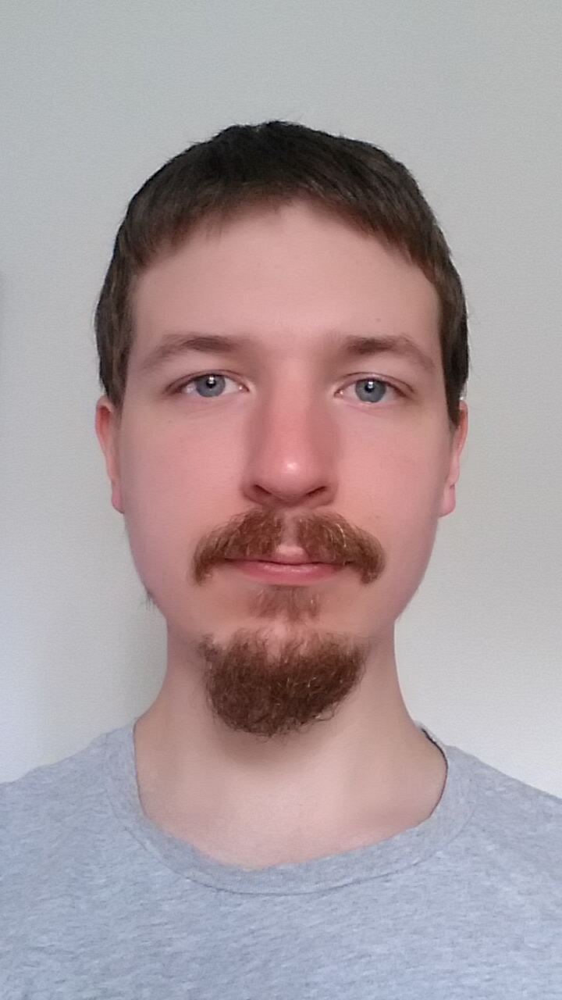

Mit navn er William Reymann-Carlsen, og jeg er i øjeblikket i gang med min uddannelse som multimediedesigner på erhvervsakademiet Cphbusiness. Jeg har tidligere gået på Vallekilde højskoles spiludviklingslinje, hvor vi lærte at lave små spil med Unity game engine og om generelt gamedesign. Som en del af undervisningen blev jeg introduceret til følgende: Unity game engine, Basis-programering i C-sharp, Adobe Photoshop, Adobe Illustrator og 3D-modelering i Blender.
Jeg har personligt brugt ekstra tid på 3D-modelering og animation i Blender, hvor jeg for eksempel, har bygget en mand og fået ham til at danse eller slås.